Министерство науки и высшего образования РФ
ФГБОУ ВО «Удмуртский государственный университет»
Институт математики, информационных технологий и физики
Кафедра информационных систем и сетей
Направление 09.03.01.01 «Информатика и вычислительная техника»
Выпускная квалификационная работа на тему: «Разработка автоматизированной системы проветривания помещения»
Выполнил:
студент группы ОБ-09.03.03.01-41
Белкин Никита Вячеславович
Постановка задачи
Цель: разработать автоматизированную систему проветривания помещения
Требования к системе:
- Простота
- Легкая установка на окно
- Удобное управление
Поставленные задачи:
- Изучить аналоги, представленные на рынке
- Разработать общую схему устройства
- Смоделировать механизм, двигающий подвижную створку окна
- Разработать алгоритм для автоматизированного управления механизмом
- Написать программу для микроконтроллера на основе разработанного алгоритма
- Написать мобильное приложение для удобного управления
Обзор аналогов
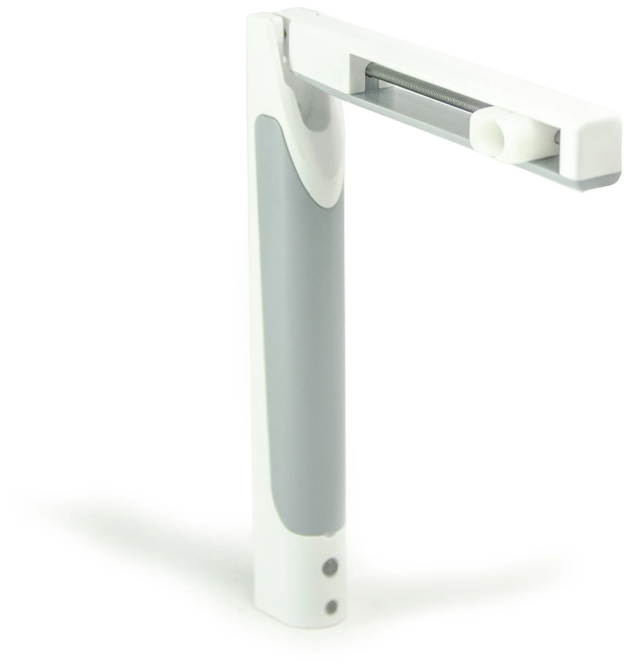
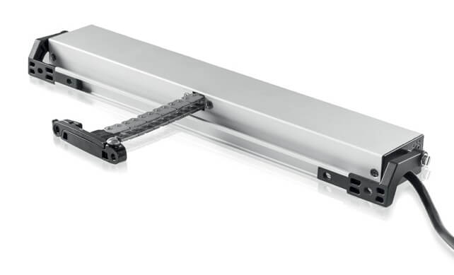
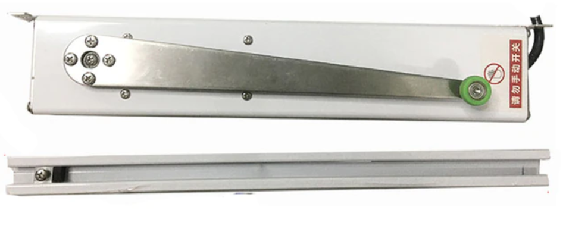
Общая схема устройства
Управляющий механизм
Свойства
- Простота
- Легкая установка на окно
- Надёжным(по возможности)
Первый вариант
Механизм на основе катушки с леской
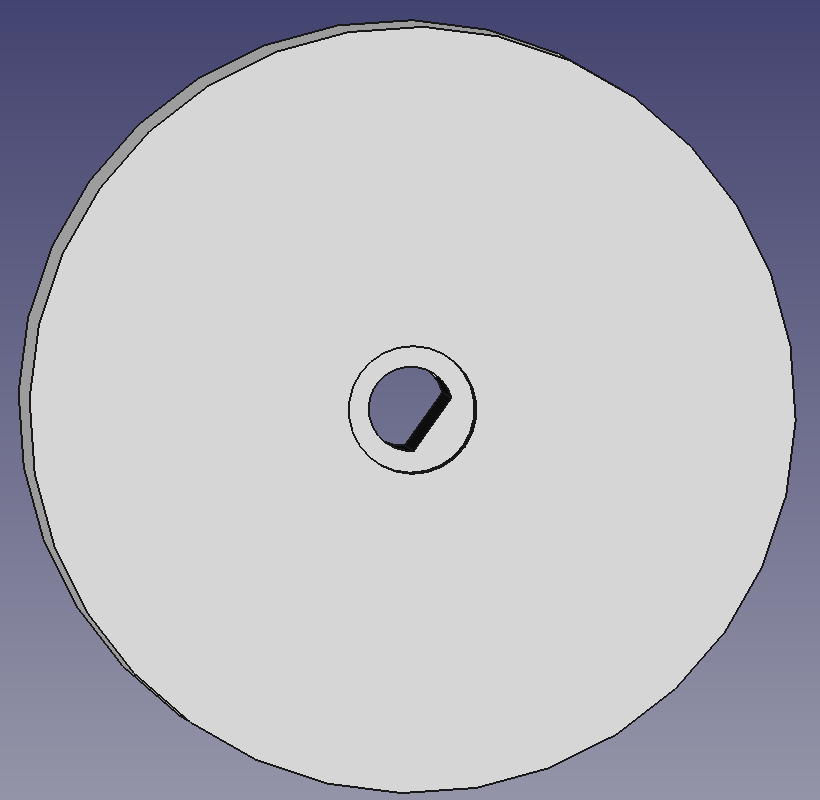
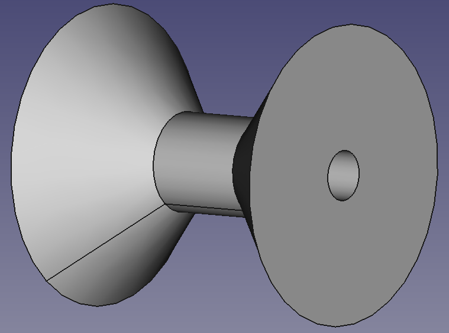
Недостатки первого варианта
- Не все окна открываются под собственным весом
- Сложность регистрации момента открытия окна
Второй вариант
Механизм на основе зубчатой рейки и шестерни
Преимущества перед первым вариантом
- Можно как открывать, так и закрывать окно
- Проще регистрировать факт того, что окно закрыто, либо открыто
Микроконтроллер
Atmega128rfa1
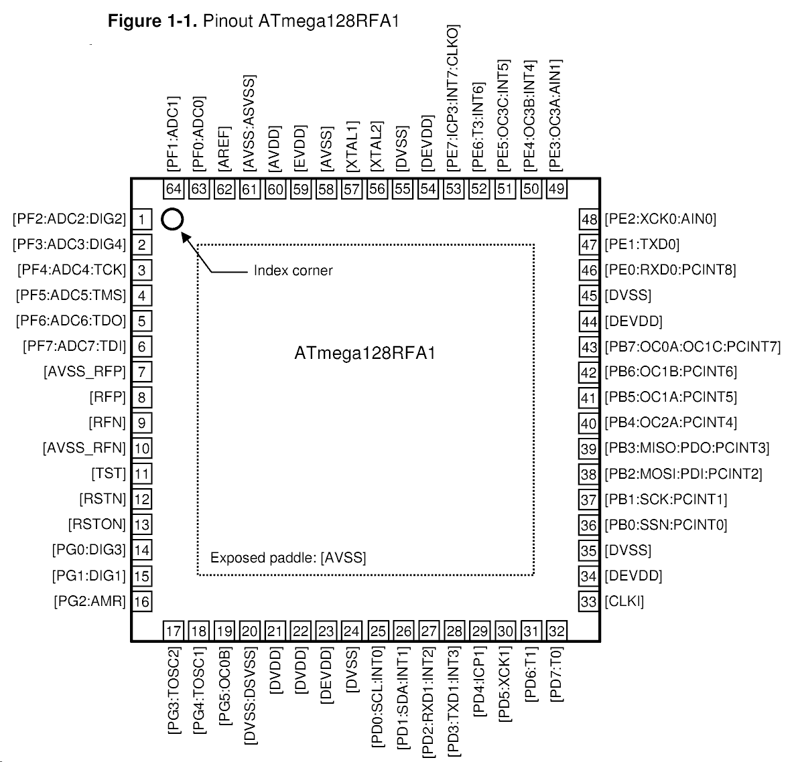Программа для управления микроконтроллером
Задачи:
- Управлять механизмом открывания/закрывания
- Регистрировать сигналы с датчиков
- Обрабатывать сигналы с устройства передачи данных
Язык программирования
Использованные библиотеки
Логика работы
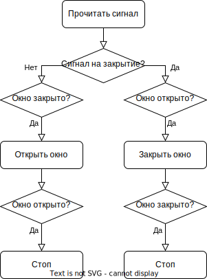Взаимодействие микроконтроллера с устройством передачи данных
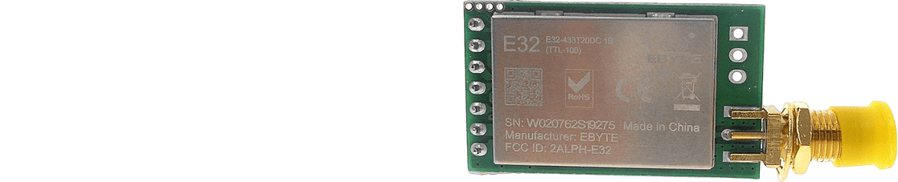 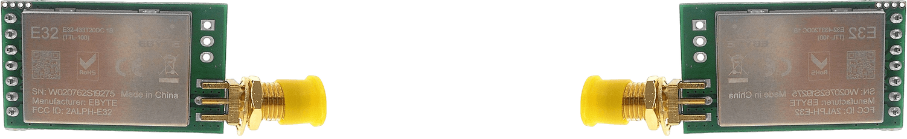Управление двигателем
H-мост
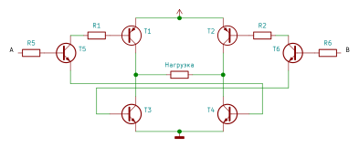Получившийся результат
- Был создан минимально работоспособный прототип
Нерешённые проблемы:
- Ложные срабатывания реле, из-за чего створка не доходит до конечного положения
- Нет сильного прижима окна в закрытом положении
- Нет питания от аккумуляторов